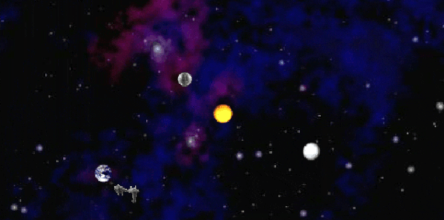
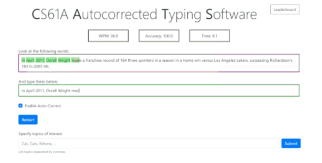

Projects
Bear Maps
This is a JavaSpark website which hosts an interactive map of Berkeley, CA I built in CS61B. It can find locations, autocomplete inputs, and compute the shortest path between two locations.
NBody Extreme
This project models space using Newton's laws of gravitation and can simular orbitting bodies. I also created an interactive game that I detail here. In this game the user controls the space ship and has to destroy all the planets to win, but if the space ship is destroyed you lose.
Scheme Interpreter
For this project, I implemented a fully functional, tail recursive scheme interpreter. You can see it work by hovering over the image! Scheme is a LISP (list processing) language that was popular during the '70s.
CATS
For this project, I created an autocorrecting typing speed software! It also has a feature that displays the user's accuracy.
